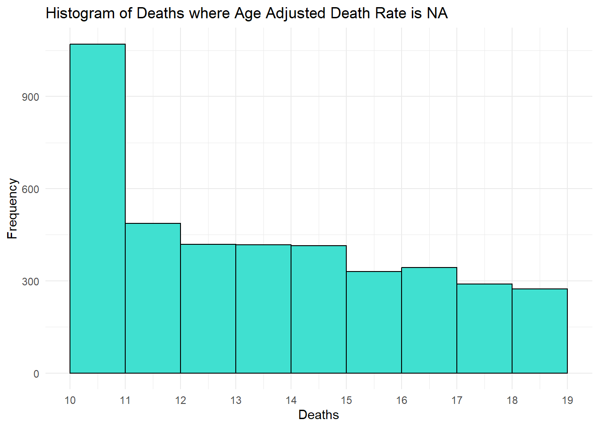
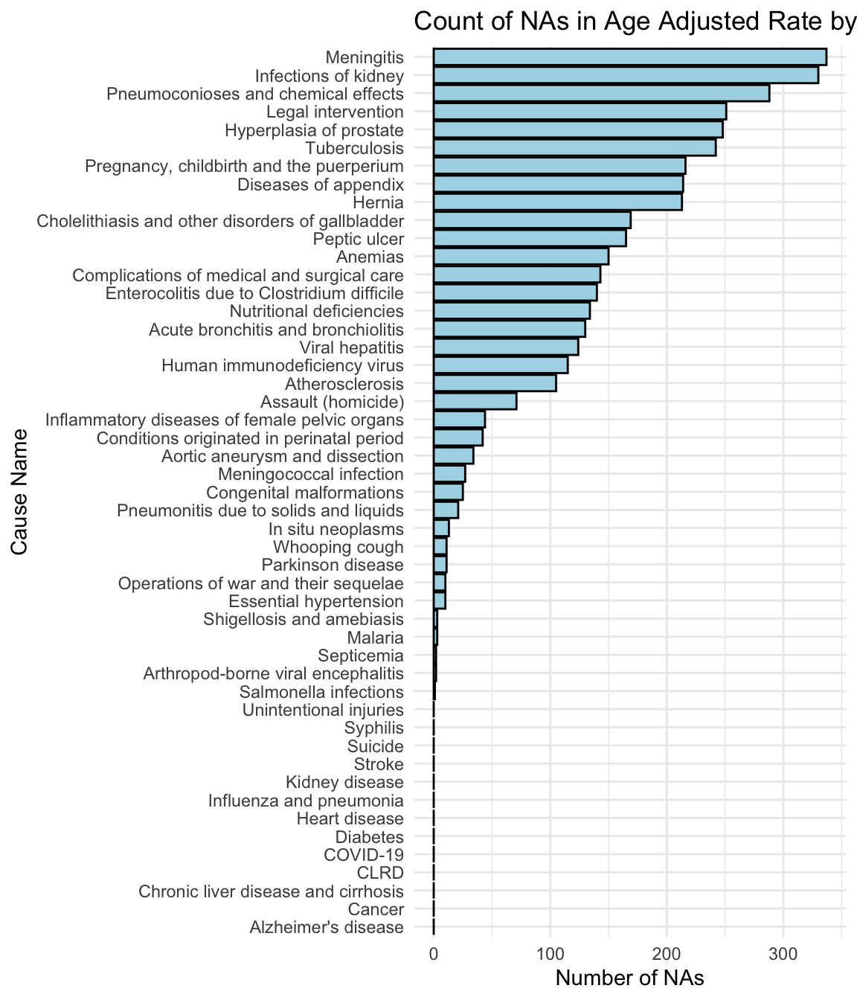

The CDC Leading Causes of Death Data set is the primary data source for our project.
2.1 Technical description
2.1.1 Data collection
We will primarily work with data related to causes of deaths published by the Centers for Disease Control and Prevention (CDC). The data is collected by the CDC, specifically by the National Center for Health Statistics (NCHS). This involves gathering mortality and population data from the National Vital Statistics System (NVSS), which receives information from state and local health departments in the United States.
2.1.2 Description of the data
Format: The data set is publicly available in CSV files on the following website: link
Frequency: Annually updated from 1999 to 2020
Features: Key features include causes of death, demographic information (race, sex, age), and geographic location (state).
Dimensions: the data set provides the following metrics:
Deaths: number of deaths that occurred in a specific year for a specific race, sex, or state.
Population: the total population for that specific year, race, state, etc.
Crude Death Rate: the number of deaths divided by the total population.
Age-Adjusted Death Rate: number of deaths adjusted by age.
Specific description: The primary data set has 37290 rows and 8 columns.
It is important to differentiate between Age-Adjusted Death Rate, Deaths, and Crude Death Rate. While the three provide information about mortality, we will mostly focus on the Age-Adjusted-Death-Rate. The Crude Rate measures the number of deaths in a given population divided by the size of that population.
An increase in the number of deaths will cause a rise in the Crude Death Rate. However, this can be misleading in populations with a growing number of elderly people, who naturally have a higher likelihood of dying.
On the other hand, the Age-Adjusted Death Rate is a mortality rate statistically modified to eliminate the effect of different age distributions in different populations. This rate allows comparisons between populations with different age structures. A good explanation of the difference can be found here. As a formula, it can be defined as,
The Age-Adjusted Death Rate is essentially a weighted average of Crude Rates for different age groups. In this metric, each additional death adds \(w_i\times CrudeRate_i\) to the total, whereas in the Crude Rate, its contribution is a fixed (and higher) value of \(1\). For populations with a significant percentage of individuals aged 85 and above, the number of deaths is adjusted by the group’s weight. This adjustment yields a metric that facilitates the comparison of mortality rates across diverse populations.
There are some other data sets that we anticipate using from the CDC (e.g., data relevant to opioid dispense rates). One such data set that seems promising to answer some of the questions that we will pose later is the following link. This particular data set will need to be manually compiled as it provides data for the years 2006-2020 with 3 columns: State, Abbreviation, and Opioid Dispensing Rate per 100. The dimensions are 51x3. However, there is such a data set for each year.
2.1.3 Importing the Data
The data set can be obtained from the CDC website in a CSV format. We will store the data set in the repository and import it into R using the read_csv() function. The second data set regarding opioid dispense rate is carefully imported year by year into a spreadsheet table and exported as a CSV file. Similarly, the next step is ti import it into R using the read_csv() function.
2.1.4 Data Analysis Limitations and Concerns
Overall, the data is consistent, and the figures appear accurate, with no inherent discrepancies observed. However, it’s important to note that the CDC refrains from calculating Age-Adjusted Death Rates or Crude Death Rates when the total number of deaths is 10 or fewer, labeling these instances as ‘Unreliable’. While the actual numbers in such cases would be minimal, it’s reasonable to consider these ‘Unreliable’ values as zero for analytical purposes. We will speak more about this in the Missing value analysis section.
We can take a look at the first few rows of the data set:
Human immunodeficiency virus (HIV) disease (B20-B24)
Human immunodeficiency virus
Alabama
177
4,430,141
4.0
4.0
1,999
Malignant neoplasms (C00-C97)
Cancer
Alabama
9,506
4,430,141
214.6
210.9
1,999
In situ neoplasms, benign neoplasms and neoplasms of uncertain or unknown behavior (D00-D48)
In situ neoplasms
Alabama
237
4,430,141
5.3
5.3
=======
Year
113 Cause Name
Cause Name
State
Deaths
Population
Crude Rate
Age Adjusted Rate
1,999
Tuberculosis (A16-A19)
Tuberculosis
Alabama
16
4,430,141
1,999
Septicemia (A40-A41)
Septicemia
Alabama
691
4,430,141
15.6
15.6
1,999
Viral hepatitis (B15-B19)
Viral hepatitis
Alabama
63
4,430,141
1.4
1.4
1,999
Human immunodeficiency virus (HIV) disease (B20-B24)
Human immunodeficiency virus
Alabama
177
4,430,141
4.0
4.0
1,999
Malignant neoplasms (C00-C97)
Cancer
Alabama
9,506
4,430,141
214.6
210.9
1,999
In situ neoplasms, benign neoplasms and neoplasms of uncertain or unknown behavior (D00-D48)
In situ neoplasms
Alabama
237
4,430,141
5.3
5.3
>>>>>>> 7a9b91aec41d1feedae63fc006cb160d7e98c885
2.2 Research plan
The comprehensive data on causes of death is provided by the CDC. It includes crude and age-adjusted rates and death tolls by state, race, and year, and serves as a solid foundation for addressing our research questions.
First, we will identify the top 10 highest causes of death historically over the last two decades. Then, we will address a more interesting question. We will distinguish which causes of death whose rates appear to be steady and identify the causes of death that appear to be aggressively increasing. In several instances, we anticipate that this will require us to compare time series and choose adequate metrics in order to appropriately make such comparisons. Conveniently, the age-adjusted death rate gives us an accurate glimpse while taking into account the distribution of the age groups in the US.
A particularly interesting question that we want to answer is to identify which causes have had the fastest rate of growth in terms of age-adjusted death rate. For example, a potent question to answer would be the following: have certain causes of death been on the increase or on the decrease in the last two decades? If so, are there any outliers among them, especially if we break down geographically by state? This would require careful analysis of percentage change year-by-year and analyzing the data by state. Intuitively, we are aware that certain causes of death will show up in our research (one specific example that we anticipate seeing is the deaths due to the opioid epidemic, which has been ongoing for almost a decade now). Indubitably, we expect to find surprising results.
The research plan depends on exploring the causes of death on a state-by-state basis. This will uncover states with disproportionately high death rates from specific causes, highlighting regions where healthcare investment may be urgently needed. It will be remarkably informative to see which states fare well with certain rising causes of death, and which states are exhibiting alarming rates in comparison to others. Ideally, finding correlations that help explain death rates would be helpful. Identifying such trends can help policymakers and professionals (e.g., doctors, nurses, mental health professionals, representatives) have a clearer understanding of the reasons behind the spikes in deaths and hopefully help guide them towards adequate solutions to mitigate the quickly rising causes of death.
2.3 Missing value analysis
According to the CDC: “Statistics representing fewer than ten persons (0-9) are suppressed. Rates are marked as “unreliable” when the death count is less than 20.” The reason they cite to to protect individual privacy and confidentiality. In theory, this ensures that data cannot be used to identify or infer information about specific individuals while maintaining ethical standards in data handling and reporting.
For this reason, our data set contains N/A values in Age-Adjusted Death Rate and Crude Rate for Deaths lower than 20. Moreover, there are no entries having Deaths less than 10. We can confirm this by looking at the summary() of the column Deaths being 10:
Code
#Searching for the minimum value registered for Deathssummary(cdc_dataset$Deaths)
Min. 1st Qu. Median Mean 3rd Qu. Max.
10 50 203 2618 866 725192
This confirms that the data set consists of entries having Deaths greater than or equal than 10.
Finally, we can see the distribution of Deaths for N/A’s. The values should be higher than 10, and less than or equal to 20. Otherwise, there are inconsistencies:
Code
# Load necessary librarylibrary(ggplot2)filtered_data <-subset(cdc_dataset, is.na(`Age Adjusted Rate`))max_death <-max(filtered_data$Deaths, na.rm =TRUE)ggplot(filtered_data, aes(x = Deaths)) +geom_histogram(binwidth =1, boundary =9, fill ="turquoise", color ="black") +scale_x_continuous(breaks =9:max_death +1) +labs(title ="Histogram of Deaths where Age Adjusted Death Rate is NA", x ="Deaths", y ="Frequency")+theme_minimal()

As we can see, the minimum value is 10 and the maximum is 19. This means that all NAs have values lower than 20 as the CDC stated.
Code
#Librarieslibrary(ggplot2)library(dplyr)#Subsetna_count <- cdc_dataset %>%group_by(`Cause Name`) %>%summarise(NA_Count =sum(is.na(`Age Adjusted Rate`))) %>%arrange(desc(NA_Count))#plotggplot(na_count, aes(x = NA_Count, y =reorder(`Cause Name`, NA_Count))) +geom_bar(stat ="identity", fill ="lightblue", color ='black') +labs(title ="Count of NAs in Age Adjusted Rate by Cause", x ="Number of NAs", y ="Cause Name") +theme_minimal()

Thus, turning N/A’s into 0’s is the the practical solution given they represent extremely very numbers.